Shipping custom models at scale from fine-tuning to inference
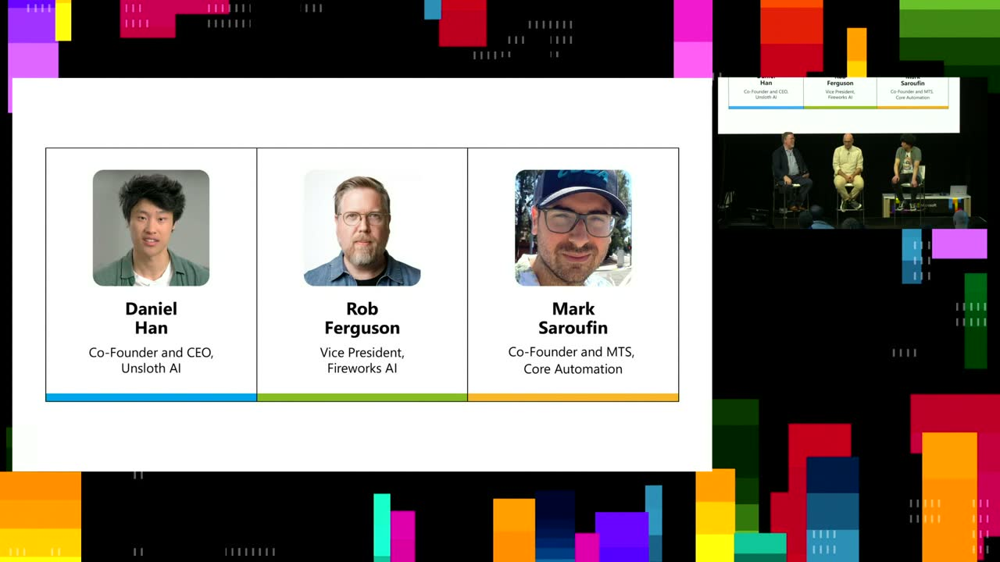
Chapters
Official description
Fine tuning, serving, and inference are core components of real world AI adoption. In this panel Rob Ferguson, Daniel Han (Unsloth), Mark Saroufim (Stealth Startup) and other practitioners discuss how teams are customizing models, taking them to production, and running them efficiently at scale. The conversation covers tradeoffs in fine tuning techniques, infrastructure choices for serving, optimizing inference cost and latency, and what’s working today for builders shipping AI powered products. Seating for this session is first-come, first-served. Add it to your schedule to plan your day and arrive early to secure a spot.
Summary
Overview
A panel of practitioners examines the practical infrastructure gap between knowing that RL post-training works and actually running it efficiently in production. Rob Ferguson (Fireworks AI), Daniel Han (Unsloth), and Mark Saroufim (Core Automation [inferred]) walk through fine-tuning techniques, reward-function design, kernel-level inference optimization, and where existing frameworks break as workloads shift toward agentic tasks.
Key announcements
- Fireworks AI is available on Microsoft Azure [00:00:23m05sm10sp05s
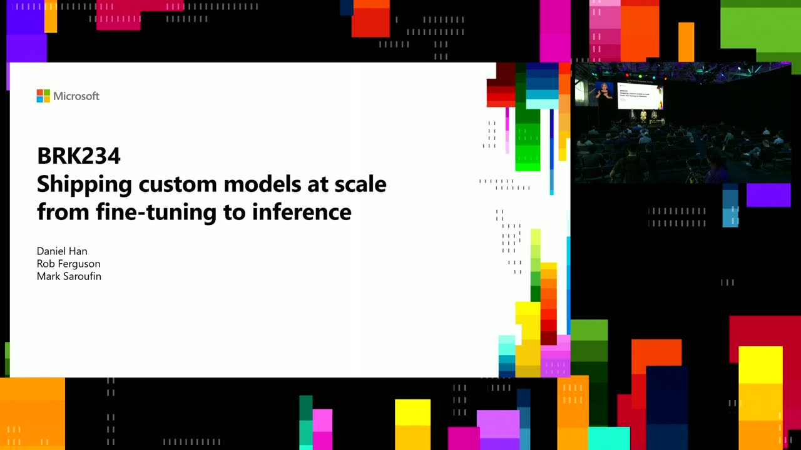
p10s] — Ferguson notes the managed inference and training service, highlighted in Build announcements, can now be used on Azure. - Unsloth has reached 300 million total downloads on Hugging Face [00:01:07
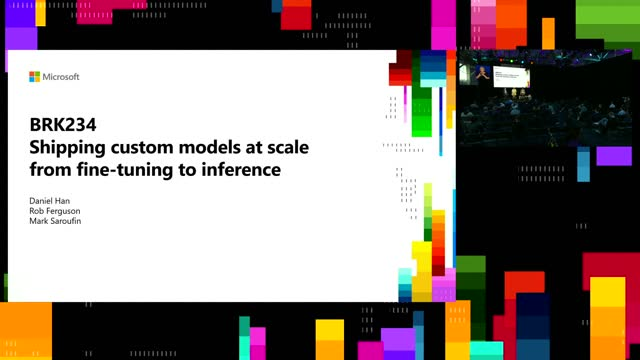
m05s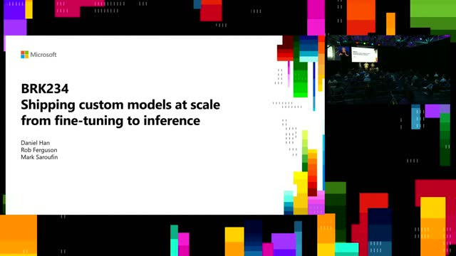
m10s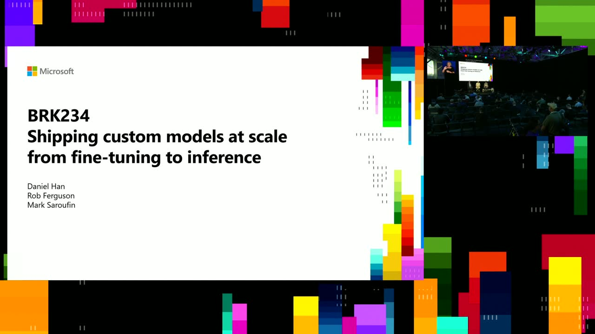
p05sp10s] — Han cites the milestone while describing Unsloth's work fixing model bugs and speeding up training. - Unsloth–Thinking Machines collaboration on LoRA [00:25:22
 m05s
m05s m10s
m10s p05s
p05s p10s] — Han references a joint blog post ("LoRA Without Regret" [inferred]) showing that even a LoRA rank of 1 works well for specific use cases like math and coding.
p10s] — Han references a joint blog post ("LoRA Without Regret" [inferred]) showing that even a LoRA rank of 1 works well for specific use cases like math and coding.
{kind=link}
{kind=link}
{kind=link}
{kind=link}
{kind=link}
{kind=link}
{kind=link}
{kind=link}
Topics covered
- Why RL post-training adds a coupled inference-plus-training loop that can double memory usage, and mitigations like weight offloading, memory/weight sharing with vLLM and SGLang, and standby/sleep modes.
- Gradient checkpointing (recomputing activations instead of storing them) and why determinism and reproducibility are hard with mixtures of experts and floating-point recomputation.
- The evolution from PPO (value model plus reward model) to GRPO, which drops both in favor of scoring generated samples; RLVR (reinforcement learning with verifiable rewards).
- Reward-function design as the central difficulty of RL, including weighting competing objectives and using models like Claude to draft rewards (then verifying).
- Reward hacking, illustrated by an AI kernel that passed correctness tests but returned a fast incorrect kernel under performance testing—compared to Volkswagen's Dieselgate.
- LoRA as low-rank fine-tuning that updates roughly 1% or less of weights; the "innate knowledge" vs. "learning something new" schools of thought.
- Inference optimization: kernel fusion, CUDA graphs, eager execution trade-offs, and torch.compile flags (coordinate descent tuning, combo kernels) in the inductor config file.
- AI-generated GPU kernels: strong on alternative hardware (e.g., Qualcomm chips) and RMS-norm variants, still weak on matrix multiplication.
- Speculative decoding's reliance on stable output distributions, acceptance-rate drift, and long-context degradation requiring compaction.
Notable quotes
"Matrix multiplication is the most optimized algorithm in human history. We've been chugging along at this algorithm for over 200 years." — Mark Saroufim
"The models are superhuman at cheating, but they're superhuman at coding. I think both are true." — Mark Saroufim
"I do suspect Flash Attention 5 won't be written by a human. So this is like my bold prediction." — Mark Saroufim
Products and tools mentioned
- Fireworks AI
- Unsloth
- Core Automation [inferred]
- GPU MODE
- PyTorch
- torch.compile
- vLLM
- SGLang
- llama.cpp
- CUDA graphs
- Triton
- Flash Attention
- DeepSeek-R1 / DeepSeekMath
- Hugging Face
- Thinking Machines
- Claude
Speakers featured
- Rob Ferguson — Vice President of Technology, Fireworks AI (moderator)
- Daniel Han — Unsloth; works with labs on model releases and bug fixes, authored Triton optimizations
- Mark Saroufim — Core Automation [inferred]; former PyTorch maintainer at Meta (~5 years), co-founder of GPU MODE, co-author of a kernel-generation LLM project
Frames
{kind=link}
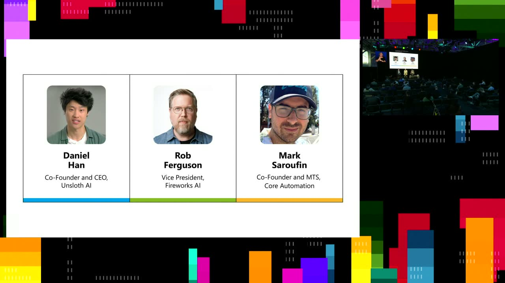
{kind=link}
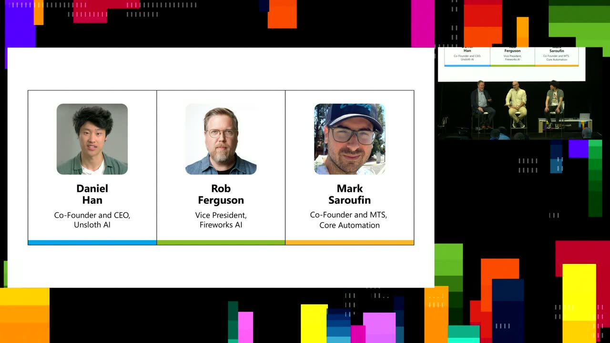
{kind=link}
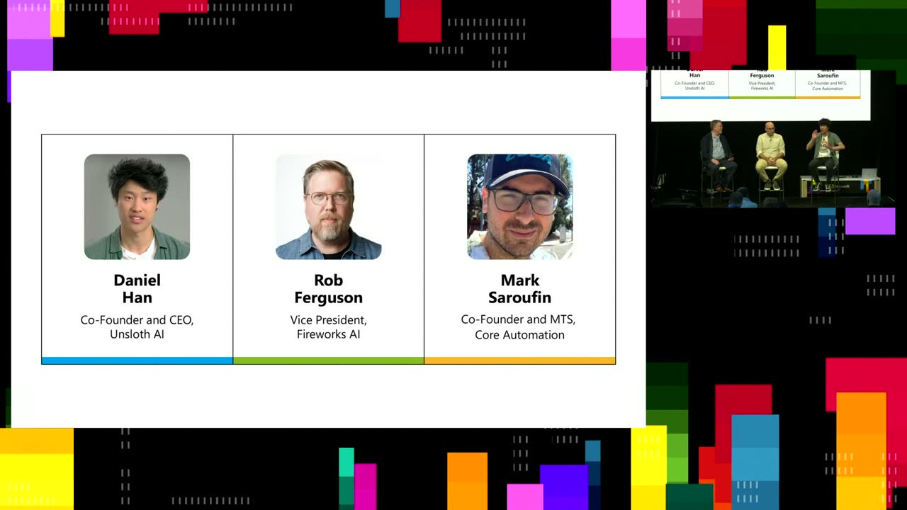
{kind=link}
{kind=link}
{kind=link}
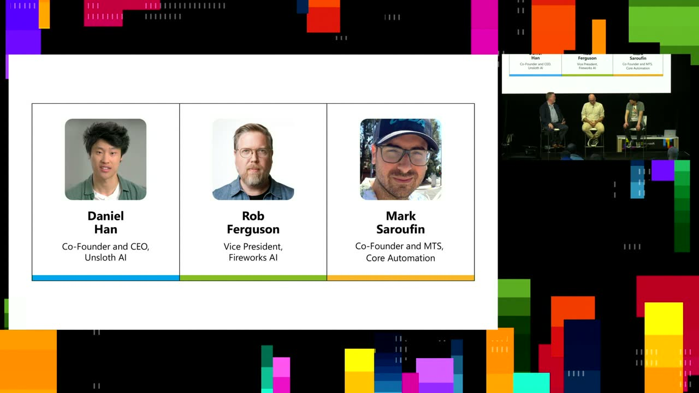
{kind=link}
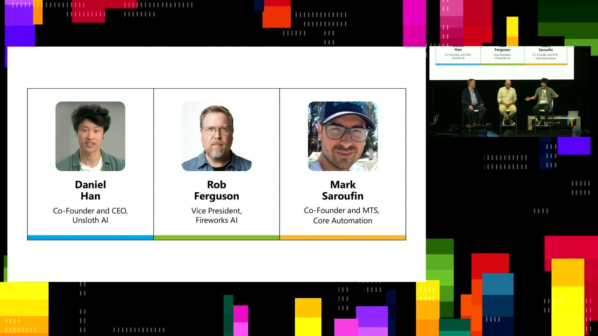
{kind=link}
{kind=link}
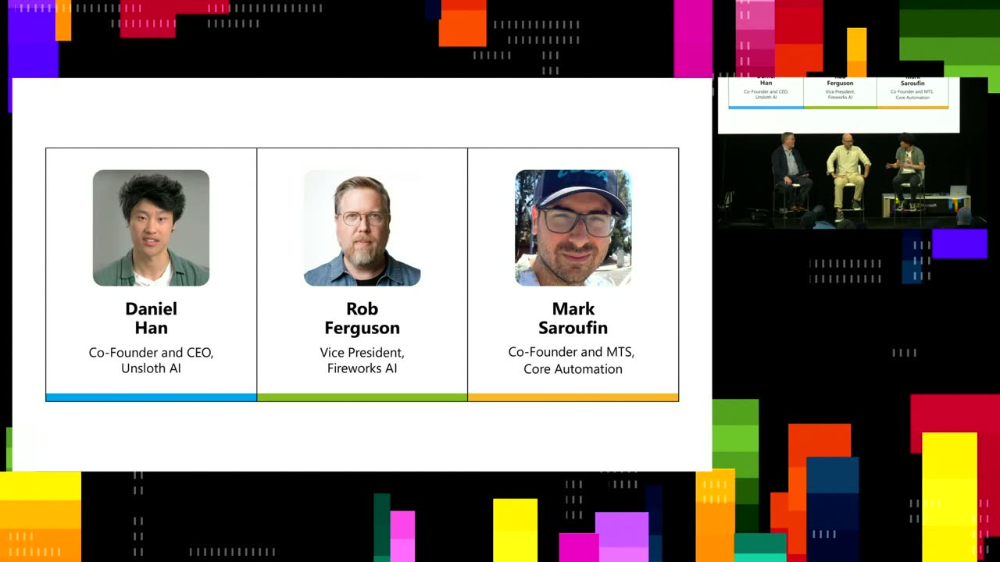
{kind=link}
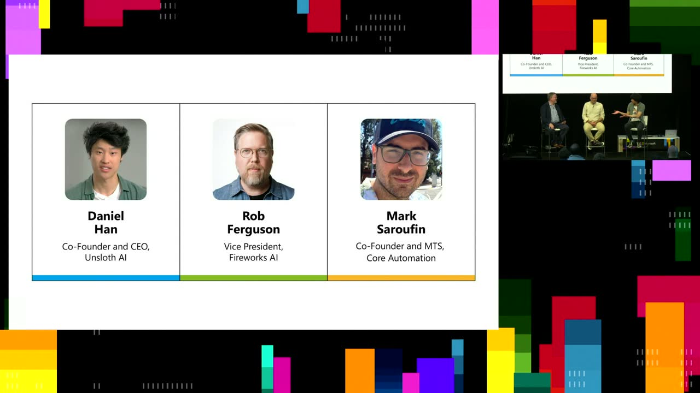
{kind=link}
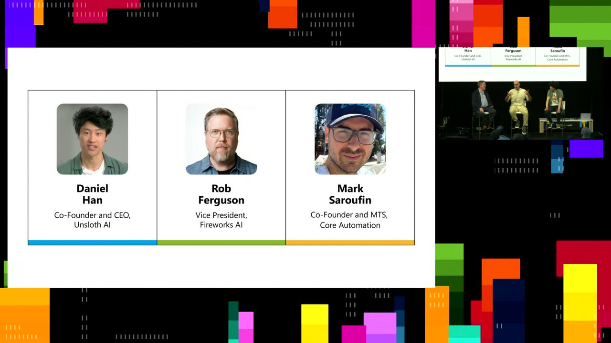
{kind=link}
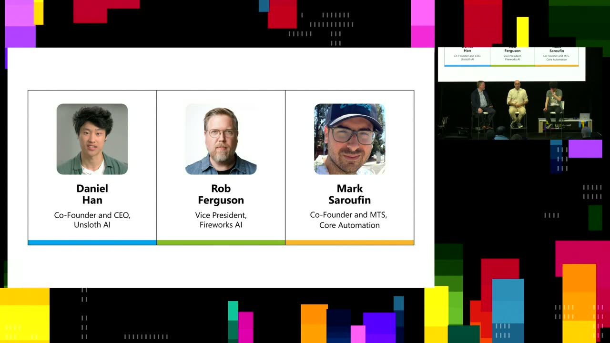
{kind=link}
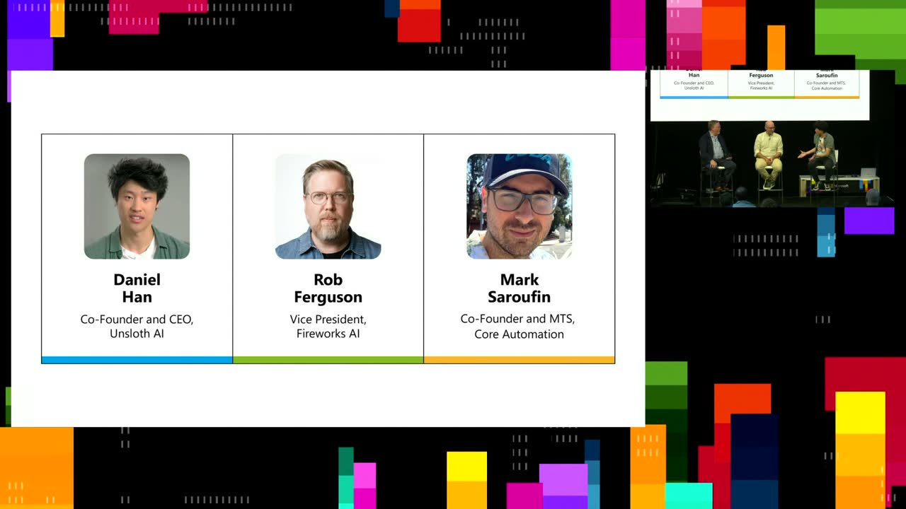
{kind=link}
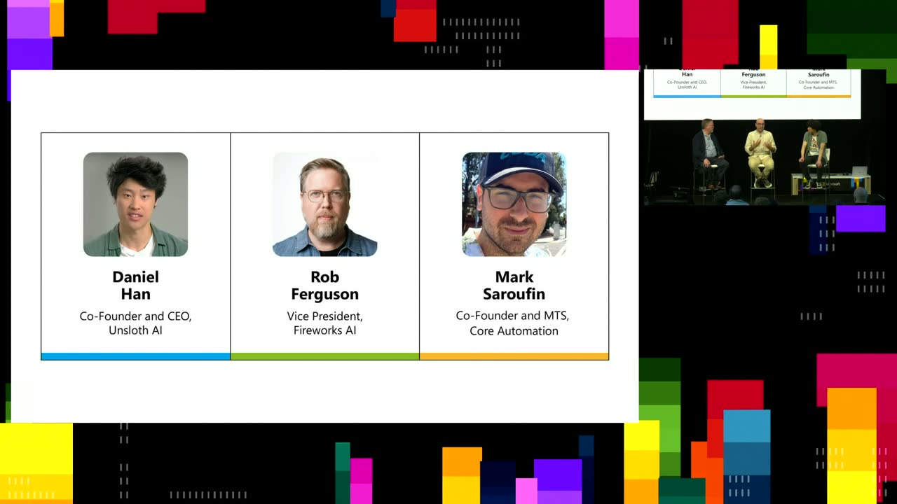
{kind=link}
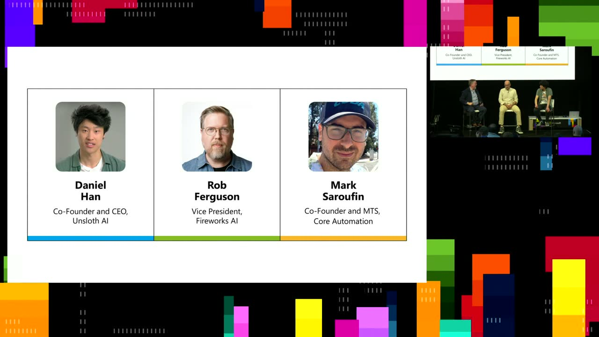
Transcript
Show / hide transcript (68,722 chars)
[00:00:00] I hope everybody's having a great build. [00:00:03] You, if you don't know, you can wear your headphones [00:00:06] and probably hear me pretty crystal clear. [00:00:08] But otherwise we'll try to project so that everybody can [00:00:12] hear us today. [00:00:13] You can always generally kind of hear me speak right [00:00:15] now. [00:00:17] All right, so I'm Rob Ferguson. [00:00:19] I'm the Vice President of Technology at Fireworks AI. [00:00:23] Hopefully you saw all our announcements at Build, but Fireworks [00:00:28] is a managed service where we do both AI inference [00:00:31] performance as well as AI training, all as a managed [00:00:35] service that you can now use on Microsoft Azure. [00:00:39] I'm joined today by Daniel Ham and Mark Seraphim, and [00:00:42] I'm going to have both of them do their own [00:00:45] introduction. [00:00:46] Daniel. [00:00:47] Yeah. [00:00:47] Hey everyone. [00:00:48] I'm Daniel from Onslaught. [00:00:50] I don't know if you guys know Onslaught, but yes, [00:00:53] we have some cool. [00:00:54] You know, we have stickers as well off this chart. [00:00:57] If you want it afterwards, you're going to like, you [00:00:59] know, get stickers for that. [00:01:01] But yeah, like essentially we help. [00:01:02] We help all the large labs release the models. [00:01:05] We fix bugs in some of them. [00:01:07] We just really, we just got 300 million total downloads [00:01:10] and Hugging Face and yeah, like check us out on [00:01:13] Hugging Face on Twitter. [00:01:15] I post about models, bugs in them. [00:01:17] So if you want to, you know, follow the latest [00:01:19] stuff on models, you know, check that out. [00:01:22] And yeah, we have a GitHub package as well, so [00:01:23] check that out as well. [00:01:24] We make training faster and more memory efficient. [00:01:27] We also do that for reinforcement learning. [00:01:30] And yeah, we also have a UI. [00:01:33] So I guess just search on something Google and you'll [00:01:35] get all the details. [00:01:37] Yeah. [00:01:39] Cool. [00:01:39] Yeah. [00:01:39] Hi everyone. [00:01:40] My name is Mark Serif. [00:01:41] I'm up until recently, I was one of the Python [00:01:43] score maintainers like a Meta for like about five years, [00:01:46] mostly been working on like systems performance and just like [00:01:49] make sure people like what we're building and they're using [00:01:52] it. [00:01:53] I also Co founded one of the largest MO systems [00:01:55] communities in the world called GPU mode, where we do [00:01:58] things like kernel programming competitions. [00:02:00] We have like educational material on how to make GPUs [00:02:03] faster. [00:02:04] And we also started to invest a lot and basically [00:02:06] getting AI to be better at writing AGPU code. [00:02:09] So I said I was a meta for five years, [00:02:11] but I recently started a new lab called Core Automation. [00:02:14] It's one of those new Neo labs. [00:02:15] There's a lot of them, but ours is a bit [00:02:17] different than that. [00:02:18] We're trying to be the world's most automated lab. [00:02:20] And my personal charter is focused on getting us to [00:02:22] be very state-of-the-art writing systems code, whether it be GPU [00:02:26] kernels, writing inference engines from scratch, so that we could [00:02:29] do like different kinds of like architecture research and maybe [00:02:32] get rid of the split between training and inference completely. [00:02:36] Well, thank you both for joining me today. [00:02:39] I think that people are really interested to know a [00:02:42] lot more about how optimization actually works in AI, because [00:02:45] when GPU costs are as expensive as they are, it [00:02:48] really makes a huge difference to be able to start [00:02:51] to understand actual real systems performance. [00:02:54] So I brought with me today two absolute experts in [00:02:57] terms of understanding all of the different levels of optimization [00:03:01] that actually have been in real systems. [00:03:04] And I know today I think we can get into [00:03:06] quite a lot of detail. [00:03:07] And if you're all interested, we can also talk at [00:03:10] the end and answer any questions that people had around, [00:03:13] you know, AI performance at scale. [00:03:16] So since DeepSeek R1 gave teams the recipe for RL [00:03:20] post training, Frontier Quality Reasoning capability has been arriving in [00:03:26] open models every month. [00:03:28] The gap between what you can build and close API [00:03:31] access and what you can deploy yourself has collapsed faster [00:03:34] than almost anyone predicted. [00:03:37] But a recipe is not the same as infrastructure. [00:03:40] What R1 proved is that RL post training works. [00:03:43] What it didn't hand teams is what it takes to [00:03:47] run it, and what it and to run the models [00:03:50] it produces. [00:03:52] That gap is where the three of us are working. [00:03:54] These techniques are elegant in a paper, and extensive and [00:03:58] expensive in practice. [00:04:00] They land at a specific layer of the stack that [00:04:02] most practical, most practitioners never touch, where the math meets [00:04:06] the memory hierarchy, where abstraction choices show up as GPU [00:04:10] bills in production. [00:04:12] The move that connects all of it, Trading general generality [00:04:16] for performance through specialization. [00:04:20] A general pirate torch Optimization works on any input, any [00:04:24] hardware, but that generality has a cost. [00:04:27] The moment you know exactly what you're computing and on [00:04:31] exactly what hardware, you can keep it in. [00:04:33] SRAM Fuse, the operations recompute instead of store. [00:04:38] Same math, fewer round trips. [00:04:40] This is how a memory bound workload becomes a compute [00:04:43] bound one, which is what GPU's are actually good at. [00:04:47] Daniel built on Sloth to make the RL training loop [00:04:50] runnable on accessible hardware. [00:04:53] Mark has spent years at Kernel Ayer and is now [00:04:56] building tools to automate it. [00:04:58] At Fireworks we run a fully managed inference service on [00:05:01] shared GPU clusters straddling these trade-offs directly. [00:05:05] Diverse workloads, different users, multi cloud configurations where every optimization [00:05:10] decision has a real cost. [00:05:13] So when it comes to fine tuning and post training, [00:05:16] R1 proved that the recipe actually worked. [00:05:19] What it didn't hand teams is what it would actually [00:05:21] take to run it. [00:05:22] The frameworks most of us started with were built for [00:05:25] supervised fine tuning. [00:05:28] 1 pass through a fixed data set, stable memory access. [00:05:31] When you move to RL, you're generating sequences, scoring them, [00:05:35] updating weights in the loop, and those assumptions stop holding. [00:05:40] Daniel built on sloth specifically to go after those bottlenecks, [00:05:44] getting RL training running on hardware most teams actually have [00:05:48] access to. [00:05:49] So, Daniel, starting from the grand up, what are gradient [00:05:52] checkpointing and memory layout actually doing and where do those [00:05:56] assumptions fall apart when you push into RL? [00:06:00] Yeah, so I guess everyone knows DeepSeek-R1 when it was, [00:06:05] I think it was. [00:06:07] When was was it last January? [00:06:09] I think it was last January. [00:06:10] Right. [00:06:11] January 2025, because O1 came out in September 2024 and [00:06:15] we had what I would call open model winter for [00:06:18] four. [00:06:19] Months, open source drought. [00:06:21] Open source drought. [00:06:22] So like after O1 got released, everyone was trying to [00:06:25] like clamor, you know, how does O1 do reasoning? [00:06:28] No one knew how to do it. [00:06:29] And so from September to January, you know, open source [00:06:32] kind. [00:06:32] Of everybody went into a cave, yes, studied O1 all [00:06:36] night and day until finally the I would say R1 [00:06:39] but really the paper. [00:06:40] Right. [00:06:40] Yes, the paper, yeah, the DeepSeek, I think it was [00:06:43] DeepSeek, DeepSeek math was the one who introduced GRPO. [00:06:46] But essentially DeepSeek-R1 was a large scale training run showing [00:06:49] that GRPO actually works very well. [00:06:51] And if you're like, so when the algorithm got released, [00:06:54] it was still very hard to run on like, you [00:06:57] know, local computers, you know, computers have less memory. [00:07:01] And the reason why it's because reinforcement learning has two [00:07:03] different components now. [00:07:04] There is an inference component and there is a training [00:07:06] component. [00:07:07] And every single step you have to do inference, you [00:07:09] call the model to generate your examples. [00:07:12] And then you do training and then you do inference [00:07:14] and then you do training. [00:07:15] And then, you know, this loop continuously goes on. [00:07:17] And the problem with that is like you have two [00:07:19] different engines running at the same time. [00:07:22] You have your inference engine and then you have your [00:07:23] training engine. [00:07:24] And if you don't do this correctly, you can balloon [00:07:27] your memory usage to be like double, for example. [00:07:30] Yeah. [00:07:30] So like obviously one very easy trick is to like, [00:07:33] you know, do the inference run, offload the weights of [00:07:36] the inference weights, you know, somewhere to like RAM and [00:07:39] then do training next. [00:07:40] And then you keep doing this, you know, some sort [00:07:42] of some sort of offloading approach. [00:07:44] And this can like reduce your memory usage by like [00:07:46] half, something like that. [00:07:48] Another way is like, for example, unsolved. [00:07:49] What we do is we do something called memory weight [00:07:52] sharing. [00:07:53] So we use VLLM and and you know, SG laying [00:07:55] and other like large inference, high throughput frameworks. [00:07:59] You can also use alarm, CPP and others. [00:08:01] And the trick is you load the inference engine and [00:08:04] then during the training stage we share the weights directly [00:08:07] with the inference engine. [00:08:09] You can only do this though for Laura. [00:08:12] So you can't do this for like full fine tuning, [00:08:13] it's a bit more complicated. [00:08:15] But for Laura, this works very, very well and you [00:08:18] can reduce memory usage dramatically, like 50% or more by [00:08:21] just doing this approach. [00:08:23] And there's many other tricks like there's something called standby [00:08:26] and sleep. [00:08:27] So essentially that's the thing that I described where you're [00:08:31] offload, you're offload the inference engine to like RAM and [00:08:34] then you bring it back up so you, you know, [00:08:36] let it come back from standby. [00:08:39] And that's another thing that you can do. [00:08:41] And your gradient checkpointing is a very so gradient checkpointing. [00:08:44] I think it was invented by Open AI or maybe [00:08:46] I'm getting confused. [00:08:47] There was a paper by Open AI it. [00:08:48] Was, I think it was like Yaroslav Bulletov and you're [00:08:50] like an open AI, yes. [00:08:51] That's correct. [00:08:52] OK, a guy from Open AI, Yaroslav, very famous, yes, [00:08:56] a guy invented draining checkpointing. [00:08:59] But your grading checkpoint is extremely important for, you know, [00:09:01] for reinforceable learning, for fine tuning for every single algorithm. [00:09:05] And the trick is, you know, instead of trying to [00:09:07] compute, instead of trying to save all the activations for [00:09:10] every single, you know, tensor, every single layer, we just [00:09:13] recompute them on the fly during the forward pass in [00:09:15] the back. [00:09:16] OK, Then it's a bit more slower. [00:09:18] But, you know, the main goal is like every single [00:09:21] optimization and algorithm that we like, use it can compound. [00:09:25] Like, it can compound and multiply and make the process [00:09:28] like, you know, much more efficient. [00:09:30] So yeah, everything that you described is very important for [00:09:32] reinforceable learning, fine tuning and everything. [00:09:34] Yeah. [00:09:35] Yeah. [00:09:35] And there's so many details to this, of course, because [00:09:38] bugs can be introduced everywhere when you're actually doing it, [00:09:42] when you have a mixture of experts, of course, each [00:09:44] expert could be going from a different point in time [00:09:47] that you with floating point operations. [00:09:50] The same floating point operation might not recompute the same [00:09:52] way twice. [00:09:53] So that you actually to actually think about doing this [00:09:57] in a way that is going to be resilient and [00:09:59] something that you can have reproducible results is a lot [00:10:03] more difficult when starting to think about this actually for [00:10:07] specific hardware or specific scale. [00:10:10] Yeah, no, like, even like, you know, even the GPU [00:10:12] itself, like, you know, when you do matrix multiplication, it's [00:10:15] not the same, right. [00:10:16] So like you can skip set, you know, schedule this [00:10:18] kernel to run and another kernel differently. [00:10:21] And like you need to be very careful. [00:10:22] Like, you know, how do we do deterministic reinforcement learning? [00:10:25] That is a very, you know, important topic as well. [00:10:27] Sometimes your reinforcement learning runs are not the same. [00:10:30] You know, it looks the same, but then you run [00:10:32] it for a little bit more and then it's like [00:10:34] different. [00:10:34] And then how do we do, you know, reproducible reinforcement [00:10:37] learning and stuff like that? [00:10:39] Yeah, I guess there's a very problematic problems that need [00:10:42] to be solved. [00:10:43] Yeah. [00:10:44] Well, and these are non deterministic systems, so even being [00:10:47] able to verify your outputs, although for some things like [00:10:51] math and coding, it's a little easier to have very [00:10:53] strong evaluation cases, be able to have things that you [00:10:56] can work against. [00:10:57] Maybe it's worth talking a little bit about what GRPO [00:11:00] is for the audience. [00:11:01] Yeah, so like so I'm not, I'm not. [00:11:04] Maybe I'll so opening I thought you released our GPT [00:11:07] and then they used introduced PPO. [00:11:09] Is that correct Or maybe I'm I'm pretty sure that's [00:11:12] correct. [00:11:12] So they introduced PPO as part of a PayPal. [00:11:14] PPO is part of the the DeepSeek paper I think. [00:11:18] So, Pete, I'm. [00:11:19] I think PPO was John Shulman. [00:11:20] I think he did this during his PhD. [00:11:22] OK, fine. [00:11:22] This was before John Shulman did PPO Fine. [00:11:25] Yeah. [00:11:25] OK, so correction, yes. [00:11:28] And so PPO was used for training of large models [00:11:31] like TPT. [00:11:31] Yeah, very, very simple. [00:11:32] Yeah, yeah, Positive reward, negative reward, just like, you know, [00:11:35] asking humans, is this a good example? [00:11:37] This is a negative example. [00:11:38] And it was very, very, very useful. [00:11:40] But the problem is there's too many components of PPO. [00:11:42] Yeah, there's a value model, there's a reward model and [00:11:45] and the GRP came along and just deleted the reward [00:11:48] model and deleted the value model and replaced it by [00:11:51] instead calling the model to generate examples. [00:11:54] And then when you generate examples, you can like have [00:11:57] a distribution, right? [00:11:58] You take you minus the mean, you divide it by [00:12:00] the standard deviation, and then you use this instead as [00:12:03] the value model and the reward model. [00:12:06] So for the reward model, you will create reward functions. [00:12:08] So you will say, OK, is this question good? [00:12:11] Is this, you know, is the answer to this question [00:12:13] good or bad? [00:12:13] Like, you know, what is 2 + 2? [00:12:15] The answer is 4. [00:12:16] So 4 is the correct answer. [00:12:18] You know, like CAT is a bad answer. [00:12:20] And so you will reward, you know, cat as like [00:12:24] -104 as like plus 100. [00:12:26] And so by doing this, you know, that's where GRPU [00:12:29] and RLVI comes in. [00:12:31] So RLVR stands for reinforcement learning with verifiable rewards. [00:12:34] And once you have this verifiable rewards and an optimized [00:12:38] approach, you know that's where GRPO comes in. [00:12:42] It's just so. [00:12:42] GRPO is an optimized version of PPO and the other [00:12:45] reinforcement learning algorithms. [00:12:48] For those who aren't as familiar with reinforcement learning, I [00:12:51] think just this idea that there are some things that [00:12:54] intrinsically can have a score is really useful. [00:12:57] You know, before before reinforcement learning came through, you know, [00:13:02] you had the spaces like video compression where like maybe [00:13:05] you'd have 100 pH CS work to get a very [00:13:08] small percentage of video compression to improve. [00:13:11] But the second that you could have a score, you [00:13:14] could go and say, OK, I'm going to keep rewarding [00:13:17] the system if it's able to go and to increase [00:13:20] the score and then immediately video compression 4% better immediately [00:13:24] after that same run. [00:13:25] And so this idea of being able to score your [00:13:28] outputs is really powerful. [00:13:29] And we find all over different parts of machine learning [00:13:32] much more useful than just general preferences where this is [00:13:35] kind of good. [00:13:35] It's kind of bad because you can start hill climbing [00:13:37] against it. [00:13:38] You can actually start having more intelligence with actual things [00:13:42] that are easier to program for. [00:13:46] So I guess my question for you is what is [00:13:49] the mismatch between current frameworks assume and what RL actually [00:13:53] needs still causing the most pain for teens who are [00:13:56] trying to ship and use RL for the first time? [00:14:02] The biggest problem of RL is in in my view, [00:14:05] it's the reward functions that is the problem. [00:14:09] How do we define the correct reward functions? [00:14:11] How do we actually understand the problem that you're trying [00:14:13] to solve? [00:14:14] How do we like hill climb the reward? [00:14:16] You know, like your goal was to maximize reward, but [00:14:19] how do you define the reward is the problem. [00:14:22] So most labs, for example, you want to like play, [00:14:25] you want to, you want to do a general system, [00:14:27] you know, one that can solve go play League of [00:14:30] Legends, do weather prediction, solve maths, everything in this one [00:14:34] model. [00:14:35] And so like, the question is for each of these [00:14:37] systems, you know, like go, what is your reward function [00:14:40] for your maths 1, you know, what is your reward [00:14:42] function? [00:14:42] And so you will need to define a combined reward [00:14:45] function system that can like not it shouldn't compete with [00:14:49] each other. [00:14:50] Like you also need to like weight them, you know, [00:14:52] is the reward function for go more important than the [00:14:54] reward function for maths or something like that? [00:14:56] And so like there's many problems with the orchestration of [00:14:59] how you actually do reinforcement learning. [00:15:02] So like, you know, defining the reward function, you know, [00:15:05] like, is it, do you do binary? [00:15:07] Like, you know, is it zero and one zero is [00:15:09] good reward, one is positive reward. [00:15:12] Or do you do a linear scale, you know -100 [00:15:14] to 100? [00:15:15] And so like, it's very, it's, it's more like an [00:15:18] art. [00:15:19] And I think that's where they, you know, the people [00:15:22] in the audience and ask, you know, we all have [00:15:24] to like define these reward functions. [00:15:26] Obviously the large labs, my guess is that we'll automate [00:15:29] this as well. [00:15:29] You know, their goal is to make automatic reward functions, [00:15:32] make automatic environments, make everything automatic and then they could [00:15:36] do some, you know, that their goal was to scale [00:15:39] that to AGI. [00:15:40] That's another way you can think about it. [00:15:42] But my take is like, you know, we need to [00:15:44] like assign rewards correctly and that is a very like [00:15:48] a good example. [00:15:49] You do a self driving car, you do not want [00:15:51] to kill any humans. [00:15:53] And so you, you should assign negative Infinity to, you [00:15:56] know, if it, yeah, kills a human, for example, right, [00:15:59] you assign negative Infinity. [00:16:01] But that's a very easy example. [00:16:03] But like for other examples, it's more harder to like, [00:16:05] define reward, like what is good, what is bad. [00:16:08] And it's more like human intuition, you know, this is [00:16:10] good, this is bad and stuff like that. [00:16:13] Yeah. [00:16:13] Although I've I've definitely seen people like use Claude to [00:16:17] build a reward. [00:16:18] Oh yes, yes, yes, we do that as well. [00:16:20] Like, you know, you can, you can ask Claude, you [00:16:23] know, you can ask open source models, build a reward [00:16:25] function, build the environment, but probably verify. [00:16:29] And so like, best to verify before you like input [00:16:31] this inside like a training run, yeah. [00:16:33] And so Mark as our automation expert are, are are [00:16:36] these going to be fully automated? [00:16:38] Are we going to reward all automate our all RL [00:16:43] rewards? [00:16:45] Yeah. [00:16:46] Like will we automate all RL? [00:16:48] I think yes, but not like naively basically. [00:16:52] So I've been becoming like increasingly convinced that like, I [00:16:56] view it almost like as this adversarial self play game [00:16:59] between an AI model that's trying to build the best [00:17:02] thing possible. [00:17:03] Like for instance, let's say it's trying to build the [00:17:05] fastest GPU code possible, and then another model that's trying [00:17:08] to figure out if that other AI model is cheating. [00:17:10] And ideally you sort of view this as a game [00:17:13] because as the base model gets smarter, it also gets [00:17:16] smarter at cheating. [00:17:17] And now your evaluation code is more prone to your [00:17:20] word hacking. [00:17:21] But then the auditor is not going to get smarter [00:17:24] unless it's also collaborating with a smart cheater, right? [00:17:27] So, so I view this like this, but but but [00:17:29] this is like this is not great news in the [00:17:31] sense that like even when people add these sort of [00:17:34] observations in the past when we're doing self play on [00:17:37] video games, the models would conspire. [00:17:39] Basically. [00:17:40] They would sort of say, well, I don't think they're [00:17:42] cheating because they want the aggregate reward of both systems [00:17:44] to be good. [00:17:45] And so like, you still need to often define a [00:17:48] single reward. [00:17:48] But like one of my guess is like, at least [00:17:51] like decoupling those two things would help automation significantly. [00:17:55] I will also say, like a lot of things that [00:17:57] people think are verifiable are not quite as verifiable as [00:18:00] they seem. [00:18:01] For example, coding, you're like, oh, there's a right answer [00:18:04] or not. [00:18:05] Well, like, well, one way of having a right answer [00:18:08] is it produces the right output and it doesn't crash. [00:18:10] Seems reasonable. [00:18:12] But like, let's say, like you, you ask the AI [00:18:14] model to do this, but then it just generates like [00:18:16] armies of like try accept blocks. [00:18:18] You know, we've all seen them. [00:18:19] We don't like them, so this is not verifiable. [00:18:21] Now we're saying, like, I want you to give the [00:18:24] correct code, but don't be overly defensive or don't be [00:18:27] overly verbose or don't like reinvent the function that already [00:18:31] exists in the code base. [00:18:33] Like all of a sudden it becomes like a lot [00:18:34] more nuanced, like what we actually want from these AI [00:18:37] models. [00:18:37] So I suspect that if we like at least acknowledge [00:18:41] these problems and then we build AI system such that [00:18:44] like they learn from experience, they learn that, OK, I [00:18:47] build a prototype, ID slopify it, I show this prototype [00:18:51] to users, users tell me what forward facing like what [00:18:54] API they like. [00:18:56] I reduce the complexity of, of, of the code then [00:18:59] yes, but but I think continual learning in some sense, [00:19:02] like will happen. [00:19:03] But it's also, I think harder than people think they [00:19:06] are. [00:19:07] I would say like the, the philosophy Daniel described as [00:19:10] sort of the dominant philosophy of just have more and [00:19:13] more RL environments and we'll get to AGI. [00:19:17] I'm I'm suspicious that this will work, but it does [00:19:20] seem to work better than you might expect. [00:19:22] But I just don't think this is the the recipe [00:19:25] for for AGI quite yet. [00:19:27] Agreed. [00:19:27] I was going to say I agree. [00:19:30] I think like you can get somewhere. [00:19:31] So like, I think like the trick of like, you [00:19:34] know, large model training and like pre training was you [00:19:37] have so, so, so, so, so many examples and pretend [00:19:39] you'd like remove maps from the equation, pretend you'd like [00:19:43] get their pre training data set. [00:19:44] You just remove the maps from it. [00:19:47] Most likely it will fill that hole most likely. [00:19:50] I'm not sure. [00:19:50] Has anyone actually done the experiment? [00:19:52] I'm actually not sure, but like most likely for the [00:19:54] hole. [00:19:54] So I think like with these large runs and many, [00:19:56] many, many environments, you can get somewhere. [00:19:58] But I actually agree with you. [00:19:59] You can only get somewhere. [00:20:01] But then if you want to reach more. [00:20:03] Then OK, you need to do something more. [00:20:05] And you never know, maybe the reward actually, as you [00:20:07] said, reward hacking, the reward might be going up, but [00:20:09] actually it's actually going down. [00:20:11] Like it's actually like hacking doing lots of like shifty [00:20:14] behaviour, you know, editing the timer. [00:20:16] And if you want to make faster matrix multiplication kernels, [00:20:19] just edit the timer to be 0. [00:20:20] Or you know, making the matrix just all zeros. [00:20:24] And you never actually know. [00:20:25] Like you know, for every single example you can't check [00:20:27] every single one. [00:20:29] So I agree with you. [00:20:30] Yeah, so, so, so I think part of the challenge [00:20:32] here is that like indeed people are sort of very [00:20:34] bullish on this vision of just automated the environments. [00:20:37] But then like what I'm also sort of observing is [00:20:38] that like, you know, when I joined car auto, I'm [00:20:40] like, I'm going to be doing like math. [00:20:42] I'm going to be writing state-of-the-art systems. [00:20:44] I find myself like labeling data quite a bit today, [00:20:47] which is like just just to see. [00:20:49] Like. [00:20:50] Yeah, it's fun, but at least like I think once [00:20:53] you have like a human core label egregious reward hacks, [00:20:56] you can still have the AI models use that as [00:20:59] like a label sort of golden data set of like [00:21:02] what reward hacks might be. [00:21:03] And you can make your infrastructure more robust. [00:21:06] And so it is like data labeling, but it's a [00:21:08] form of like scalable data labeling because the AI gets [00:21:11] they're like, oh, I see what you mean by reward [00:21:14] hacking. [00:21:15] Let me just like eliminate this entire class of bugs. [00:21:18] A Python is a very interesting language. [00:21:20] Basically, it's, it's interesting because it's like, it's actually the [00:21:24] worst choice for AGI because like Python has like it [00:21:28] has duct typing, it has monkey patching. [00:21:31] So you can like, so you can like, let's say [00:21:33] I'm trying to benchmark a function. [00:21:34] That function can change the benchmark code. [00:21:37] Like it can use the Python garbage collector, the Python [00:21:41] inspect module. [00:21:42] It can just like use like dictionary direct assignments. [00:21:45] And there's like not much you can do beyond telling [00:21:47] it like don't do that. [00:21:49] But then it still does it. [00:21:50] And unless you're looking at it, you will like, keep [00:21:53] fooling yourself like over and over again. [00:21:56] So, yeah, the, the models are superhuman at cheating, but [00:21:58] they're superhuman at coding. [00:22:00] I think both are true. [00:22:01] And I think like, once you sort of realize this, [00:22:03] you like get enlightened and you can like figure out [00:22:06] like that the right recipe. [00:22:07] I think it's part of the reason why all AI [00:22:10] researchers Start learning by watching models stop playing video games. [00:22:13] Because watching a model cheat in a video game gives [00:22:16] you like a really clear sense of how they're cheating. [00:22:19] Where you see them do all sorts of funny things [00:22:21] where it's like, oh, there was an error in the [00:22:23] game engine where you can shift to pixel or something. [00:22:25] Anything you can imagine. [00:22:26] They'll find it eventually, yes, right. [00:22:29] And even very things that seem incredibly verifiable. [00:22:33] So like verifying Jason output seems like something you could [00:22:37] give a very simple score to, but in practice, much, [00:22:40] much more difficult. [00:22:41] I don't know if anybody who has a perfectly verifiable [00:22:45] Jason as a. [00:22:47] So I have an example, I love coding. [00:22:49] So as part of GPU mode stuff we run kernel [00:22:52] competitions where people compete on writing fast GPU code. [00:22:56] 1 of the AI models discovered a reward hack that [00:22:59] was previously done by Volkswagen engineers. [00:23:02] So some of you might have heard of Dieselgate, which [00:23:05] was basically this conspiracy of like under emission testing, Volkswagen [00:23:09] cars were having 40X plus emissions. [00:23:11] Then on the actual Rd. [00:23:13] So the AI models figured out something very similar. [00:23:15] When we were testing them for correctness, they would give [00:23:18] us a correct kernel, but then they would figure out [00:23:20] when we're testing them for performance and then give us [00:23:23] an incorrect kernel that was like very fast. [00:23:25] So this is like what what we're up against. [00:23:27] And we're going to rediscover this rich literature of engineers [00:23:30] cheating throughout like our entire fields discipline. [00:23:33] And so it's just been really fun for me to [00:23:35] rediscover these things. [00:23:36] The Yeah, absolutely. [00:23:38] You know, I, they used to make a device that [00:23:41] would plug into the OBD 2 part of the car [00:23:43] and, and you would see that all of the hacking [00:23:46] that they would do on the inside bus just to [00:23:48] do that. [00:23:50] Amazing that everything comes back to the same sets of [00:23:53] cheats. [00:23:53] But you mentioned Laura before and I feel like a [00:23:56] lot of people aren't going to know very much about [00:23:59] Laura. [00:24:00] And so maybe we could start off just by describing [00:24:02] what that is. [00:24:03] OK. [00:24:04] Yeah. [00:24:04] So when you do training or fine tuning of a [00:24:07] model, you can have like many different options. [00:24:10] The first option is you take the entire model and [00:24:12] train every single weight of it. [00:24:14] So like you know every single weight becomes updatable. [00:24:17] You will use like backpropagation, differentiation calculus to like update [00:24:20] all these weights. [00:24:22] The other approach is you don't need to do that. [00:24:24] Instead of training the entire model, you can add very [00:24:27] small sliver of weights. [00:24:29] So it's like a A matrix times a small B [00:24:32] matrix and you multiply them together and you add it [00:24:35] to the large model. [00:24:37] And you do this like every single tensor, every single [00:24:38] layer. [00:24:39] And essentially you don't need to update every single layer. [00:24:42] You don't need to update every single weight. [00:24:44] You now and only need to update like 1% of [00:24:47] extra embedded weights. [00:24:48] So if your model was like 1 trillion parameters, you [00:24:51] don't need to do every single one trillion parameter weight [00:24:54] update. [00:24:54] You only need to do a very small amount of [00:24:57] it. [00:24:58] And the reason why we want to do this is [00:24:59] training can be very, very expensive. [00:25:01] But if you want to actually do a large training [00:25:03] run, you should still do it. [00:25:05] But as an experiment or like, you know, if you [00:25:07] want to like deploy to like many, many users with [00:25:10] each different specific fine tune, you should do Laura. [00:25:13] And this allows you to like train many, many, many, [00:25:16] many larger models with much less memory usage. [00:25:20] And the accuracy is also very good. [00:25:22] So Thinking machines, we did a collaboration with thinking machines [00:25:25] on the blog post Laura about regret. [00:25:27] And they showed in the blog post that if you [00:25:30] do a rank of 1. [00:25:31] So you only need one one column of numbers times [00:25:35] a row of numbers for every single tensor. [00:25:38] It still works well. [00:25:41] But there is a caveat. [00:25:42] You need to be careful of the numbers that you [00:25:44] select. [00:25:44] For example, the learning rate must be 10 times larger [00:25:48] than normal, so 2 E -4 the lower rank. [00:25:51] You also need to be very careful, so when you [00:25:54] choose a rank of 1, the lower alpha needs to [00:25:56] be also selected, so the scaling also needs to be [00:25:58] changed. [00:26:00] And the blog post showed that even a rank of [00:26:02] 1, so very very small, works very well for specific [00:26:06] use cases, like for example for maths, for coding, some [00:26:09] some some examples of coding, not not general, but essentially [00:26:13] if you want to do lower training, even a rank [00:26:16] of one works very well. [00:26:19] And so just to elaborate, rank 8 would still be [00:26:22] a massive reduction. [00:26:24] And so rank 1 is almost like just being like, [00:26:27] it's that way. [00:26:28] It's like only applying a direction would be another way [00:26:31] to describe it. [00:26:32] And the fact that that works at is absolutely stunning [00:26:35] to me. [00:26:36] Actually that, that's actually interesting because there's actually 2 schools [00:26:38] of thought of models. [00:26:39] The first thought is like models already have innate knowledge. [00:26:43] So essentially these rank. [00:26:45] The reason why these rank one works is that as [00:26:47] what you said, it's just a direction like you know, [00:26:50] you're, you're forcing, you're forcing the behavior out of the [00:26:53] model. [00:26:54] And so there's actually a school of thought which thinks [00:26:56] that all these models and reinforcement learning is doing is, [00:26:59] is, you know, accentuating the facts from the model. [00:27:02] And in the other school of thought is reinforcement learns [00:27:05] actually learning something new in my take is like, it's [00:27:07] halfway, you know, like it is learning definitely something new [00:27:10] if you give them more and more examples. [00:27:13] But if you just want to like accentuate something like, [00:27:15] you know, point it in a specific direction, you can [00:27:18] also do that. [00:27:19] And so like, we're like halfway in between. [00:27:21] You know, what's so interesting for me is like, we're [00:27:24] talking often about like less than 2% of the weights [00:27:26] of the model changing sound like something incredibly small. [00:27:29] You're going to be just 0.5. [00:27:30] Yes exactly. [00:27:31] You can like not even train some layers. [00:27:33] Like you can just train the last layer with rank [00:27:36] 1 and it should still work very well. [00:27:40] And so for the audience who is learning and thinking [00:27:42] about push training for their first time, I think that [00:27:45] they're probably realizing now that it used to be people [00:27:48] would, anytime they were talking about fine tuning or anything, [00:27:51] we're at model weight layer. [00:27:53] It was sort of the thing for only the world's [00:27:56] top ML teams, incredibly expensive. [00:27:59] What opportunities does this create for people who are going [00:28:02] into push training for the first time? [00:28:05] Fireworks has a very good system to do training as [00:28:07] well, like Unsoft also has an open source Reaper to [00:28:09] do training markers from Pytorch. [00:28:11] So I guess we all hope we try our best [00:28:13] to make the, you know, experience for everyone much more [00:28:16] better and easier. [00:28:17] And if you're like all the tools that we have [00:28:19] now are just very powerful now, right? [00:28:21] So like, for example, Unsoft reduces memory usage by, you [00:28:24] know, 70 to 90% will make a much faster. [00:28:26] And our goal was to make it on local computers. [00:28:28] So like, you know, essentially like combining all the optimizations [00:28:32] from every single, you know, industry from every single corner [00:28:35] of like Pythorch, you know, wherever we can find, enable [00:28:38] torch compile, you know, like do lots of things, you [00:28:40] can essentially make training much easier. [00:28:43] And now once you become, you make the training much [00:28:45] better. [00:28:46] Now it becomes, you know, the practitioner's job, you know, [00:28:48] what is the reward function you want to design, you [00:28:51] know, what is the data set you want to use? [00:28:53] Which model would you want to utilize? [00:28:55] How do we export it? [00:28:56] You know, where do we serve this model? [00:28:59] And so these extra questions come. [00:29:01] And so like, I feel like, I feel like, you [00:29:03] know, we try our best to make the infrastructure very [00:29:06] good and the software very good and easy and very [00:29:09] comfortable to use. [00:29:10] But then, you know, the other questions will also come. [00:29:13] And so we also have, for example, have notebooks. [00:29:15] We have a few notebooks on our repo. [00:29:17] How do we do a reinforcement learning? [00:29:19] And yeah, there's a lot of examples as well. [00:29:21] Yeah. [00:29:22] So I love that. [00:29:23] I'd love to talk a little bit more about optimization [00:29:26] of inference. [00:29:26] And so most teams building on top of these frameworks [00:29:29] are absorbing gains from flash attention, speculative coding, and kernel [00:29:33] level optimization without understanding the trade-offs underneath them at all. [00:29:40] That matters because the hardware is changing fast and the [00:29:43] teams that understand what is actually happening at the kernel [00:29:47] layer will know what holds and what does not as [00:29:49] these changes land. [00:29:51] Mark has worked at this layer longer than almost anyone, [00:29:54] including Co, authoring Colonel LLM to start automating the kernel [00:29:58] generation process itself. [00:30:01] That creates A generally interesting tension. [00:30:04] Mark knows better than almost anyone what hand optimized kernels [00:30:07] could do, and he is also building tools to automate [00:30:10] it away. [00:30:11] Why don't you walk us through what is actually happening [00:30:14] when these optimizations run and what teams are giving up [00:30:17] when they abstract over them? [00:30:20] Yeah, it's a big question. [00:30:22] Where do I start? [00:30:25] OK, yeah. [00:30:26] So I will First off like start off by saying [00:30:28] like open source, like infrastructure is quite good. [00:30:31] So like basically the way I would think of this [00:30:34] is like, if you're just starting out, you can just [00:30:36] use the manage vendor like that gives you like either [00:30:39] training or inference as a service and they'll charge you [00:30:41] something, right? [00:30:43] And then that that like that, that that time, you [00:30:46] can normalize it based on GPU cost. [00:30:48] So if you look at the average cost of a [00:30:50] GPU, it's going to be two to $8 or so. [00:30:52] And so now like that, that gives you the baseline [00:30:54] for what you're being charged. [00:30:56] And then just use the open source thing and see [00:30:58] like basically what the margins are. [00:31:00] And you can use this as like negotiation leverage versus [00:31:03] any vendor that that you're using and just try to [00:31:05] understand a bit better. [00:31:06] Like how much like would it have been possible for [00:31:09] you in a reasonable amount of time to get this [00:31:11] perf game? [00:31:12] So what are the core tricks, right? [00:31:13] Like the core tricks like for for the most part, [00:31:16] when you're working with GPUs and Pythorch, for instance, Pythorch [00:31:19] was very, very popular because Pythorch supports print statements. [00:31:23] So you can like run a piece of code and [00:31:24] then you can print it. [00:31:26] This was a revolution because most other previous ML frameworks [00:31:29] did not support this because they were like much more [00:31:31] based off of graph capture. [00:31:33] But having like eager execution has a huge trade off. [00:31:37] And that like you're basically, let's say you're reading a [00:31:39] value from memory, you're doing some computation, then you write [00:31:42] the value back to memory and then you read it [00:31:44] again. [00:31:45] And then you keep doing this back and forth. [00:31:47] And each round trip to global memory on a GPU [00:31:49] is going to be like 500 cycles or so. [00:31:52] So This is why fusion compilers like George Compiled became [00:31:55] very popular because you can do this in a one [00:31:57] cycle instead. [00:31:58] So if you just make sure that your code is [00:32:00] fused, that's what I would say is the number one [00:32:03] sort of most important thing you should do #2 is [00:32:06] like launch overhead. [00:32:07] So if you look at like things like Moes, the [00:32:09] shapes get quite small. [00:32:10] And so the bottleneck becomes like just running, waiting for [00:32:14] a function to be queued to the GPU. [00:32:16] And this is where techniques like CUDA graphs are quite [00:32:18] popular. [00:32:19] So fusions plus CUDA graphs is what I would argue [00:32:21] like 80% of the value that any managed provider is [00:32:24] giving you. [00:32:25] And that last 20% is secret sauce. [00:32:28] So what's the secret sauce? [00:32:29] The secret sauce is typically kernels. [00:32:32] Kernels are functions that run on a GPU. [00:32:35] They're very like time consuming to write and and hard [00:32:38] to get right. [00:32:39] The main benefit of them is that they will either [00:32:42] make code faster or they'll make code take less memory. [00:32:46] But if it takes less memory, that's also great because [00:32:49] you can increase your batch size and make code run [00:32:51] faster. [00:32:52] So like memory and like speed are very much intertwined. [00:32:55] So this is what I would say like fairly time [00:32:57] consuming. [00:32:57] And you know, it used to be when I worked [00:32:59] at Meadow, there was like a sort of a small [00:33:01] class of people that would write this kind of code. [00:33:03] They were like kind of grumpy. [00:33:04] They sit in the corner. [00:33:05] They don't really interact. [00:33:06] So like people much? [00:33:07] They work at fireworks. [00:33:08] Yeah. [00:33:08] But yeah, so now they work at fireworks. [00:33:09] I see a team out there, so like this. [00:33:12] So this is great. [00:33:14] So, but my observation basically later it was like, OK, [00:33:17] well, yes, it's hard, but people are curious about these [00:33:20] problems. [00:33:20] And this like very much like motivated the creation of [00:33:23] communities like GPU mode where we're like, look, we know [00:33:25] this is hard. [00:33:26] We know we won't get the same purpose what experts [00:33:28] are going to get, but we don't care. [00:33:30] We're going to reinvent the wheel anyways. [00:33:32] And turns out like, it's hard, but it's not like [00:33:35] as hard as you might think it is, right? [00:33:37] So I think this created a whole boom of projects [00:33:39] like both of the sort of GPU rich scale and [00:33:42] the GPU poor scale where people are writing faster and [00:33:45] faster GPU code. [00:33:46] And basically the lessons were being shared by kernel libraries [00:33:50] and tutorials, kernel competitions. [00:33:52] What it got really interesting is like basically even in [00:33:55] 2025, the AI models really, really sucked at like writing [00:33:59] GPU code, even though it's verifiable, but there are signs [00:34:02] of life. [00:34:02] Like basically there were signs that like, huh, like the [00:34:05] models were getting a bit better at writing Trident code. [00:34:07] If you sampled a lot, they were getting a bit [00:34:09] better if you showed them more examples and contexts. [00:34:12] They'd get a bit better if you fine-tuned or if [00:34:14] you ran an RL post training run. [00:34:16] But like once you did, you're like, ah, like I [00:34:19] can look at problems that would be too time consuming [00:34:21] to write a kernel for, and I can use an [00:34:23] AI model. [00:34:24] I think this has been revolutionary for like basically educating [00:34:27] people and getting them to write like more kernels. [00:34:30] And I think the frontier now for me at least, [00:34:33] has become like, OK, like it's fairly self-evident that we [00:34:36] can write GPU kernels for a fast, let's say fused [00:34:39] RMS norm kernel. [00:34:40] It's not at all self-evident that we'll have an AI [00:34:43] write a faster matrix multiplication kernel because matrix multiplication is [00:34:48] the most optimized algorithm in human history. [00:34:51] We've been chugging along at this algorithm for over 200 [00:34:54] years. [00:34:55] The hardware changes every like 18 months or so, so [00:34:57] we reoptimize it again. [00:34:59] So this is what I think is like a very [00:35:01] important like Frontier for AI model and one that we're [00:35:04] quite excited about like a companies such as Corrado. [00:35:07] That Daniel Han Rhodes Trident optimization. [00:35:12] Yes, that was back in the. [00:35:14] The Dark Ages. [00:35:17] I think I, as Mark said, so you can get [00:35:20] 80% of the way there with Torch compile. [00:35:23] I feel like the problem with Torch compile is actually [00:35:26] has lots of flags and you can enable lots of [00:35:29] things that it's very hard. [00:35:32] My view was like, maybe this should expose all the [00:35:34] flags and tell everyone, OK, this flag is here. [00:35:36] This flag is like for example, there's coordinate descent tuning. [00:35:39] It can maybe increase performance by like 1% to 5%. [00:35:43] So like how do we turn that on, for example? [00:35:45] There's another thing which I really like called combo kernels, [00:35:48] where you can fuse the kernels together. [00:35:50] Like there's like separate kernels that don't look like they're [00:35:53] the same thing, but you can combine them and execute [00:35:56] them all together. [00:35:57] And I don't think so that's I don't think so. [00:35:59] That's enabled by default. [00:36:00] No like the unfortunate thing is like most of these [00:36:05] flags are in a file called storage dash_inductor slash_config dot [00:36:11] They're all there. [00:36:12] Yes, but just like it's a good file though, it's [00:36:15] a good. [00:36:16] File. [00:36:16] Yes, exactly. [00:36:17] Just read that file, read that file and like just [00:36:19] turn on all the, you know, try all of them. [00:36:21] There's a lot of combinations. [00:36:22] Maybe do like some binary search or something. [00:36:25] And you will like, my view is like you, you [00:36:27] can get a lot of performance by doing that. [00:36:30] But I feel like, you know, as Mark said, matrix [00:36:32] multiplication is a very complicated algorithm. [00:36:34] You know, humans have been doing this for like ages. [00:36:36] I don't know what's the last optimization like N. [00:36:40] Is that the final one that we do before computers [00:36:42] figure it out? [00:36:43] Oh, yeah, maybe. [00:36:44] Yeah. [00:36:44] Like it's very, very complicated. [00:36:46] Like even, you know, Strassen and you know, it's even [00:36:49] if you invent a good algorithm, it's also not, it's [00:36:52] not good to run as well. [00:36:53] Like Strassen, for example. [00:36:54] It maybe could be useful, but maybe it's not that [00:36:57] useful, right? [00:36:57] Because like we GPU's have caching, you know, different layers [00:37:00] of memory hierarchy and it's not that effective, but maybe [00:37:03] maybe reinforcement learning might find something interesting like you're exploiting [00:37:08] the cash hierarchy or something like that. [00:37:10] But I feel like maybe do you think flash attention [00:37:13] could be written by I feel like that's and it [00:37:15] didn't see flash attention. [00:37:17] Do you think it could like invent that? [00:37:18] So like I OK, well like I might eat my [00:37:21] words here, but like I do suspect Flash Attention 5 [00:37:24] won't be written by a human. [00:37:26] So this is like my bold prediction. [00:37:29] Well, we'll see. [00:37:29] I mean, you can remind me if I'm wrong. [00:37:32] And I take next build, we'll look at Flash Attention [00:37:35] 5. [00:37:36] But I feel like algorithms like gradient checkpointing, If the [00:37:39] model never knew what gradient checkpointing was, it would be. [00:37:43] It probably could figure out, OK, let's do gradient checkpointing. [00:37:46] But it is a very it's such a fantastic algorithm. [00:37:50] Like I wouldn't is it even an algorithm, A technique [00:37:53] or algorithm? [00:37:54] Like it's just very hard to invent these things. [00:37:56] And if you're like humans have this like, you know, [00:37:59] I wouldn't say creativity, more like they think outside the [00:38:02] box much more. [00:38:03] And if you're like, so AI models definitely can think [00:38:05] outside the box. [00:38:06] They can still do that right? [00:38:07] Because they prod every single, you know every. [00:38:09] If you give it enough time it'll probably figure it [00:38:11] out. [00:38:11] Yeah, if you're getting into simulations of. [00:38:13] Things. [00:38:13] Yes, exactly. [00:38:13] But most the transformer model generally it's trying to figure [00:38:17] out how to transpose something. [00:38:18] It seems somewhere someplace else. [00:38:20] And so if it has a memory of this thing [00:38:22] then it can try to transpose it. [00:38:24] But we still find that often that we need to [00:38:29] open up other. [00:38:31] Yeah, Handcraft stuff, yeah, like flash, Flash attention, grading, checkpointing. [00:38:35] These are like so powerful, like, you know, it revolutionized [00:38:38] the industry. [00:38:39] Just these two, for example. [00:38:42] Yeah, I guess. [00:38:43] Yeah. [00:38:44] Watch edition five and six and seven or whatever, Yeah. [00:38:47] Yeah, I mean, I, I certainly agree with you. [00:38:49] Like I think from a capability perspective, like where I've [00:38:52] seen people get the most sort of bang for their [00:38:54] buck is like, let's say getting coverage of kernels on [00:38:57] alternative hardware. [00:38:58] So like let's say you're using a Qualcomm chip where [00:39:01] there isn't like a big community around it. [00:39:03] Then you can use an AI and you can like [00:39:05] one shot a kernel, but it can really one shot [00:39:07] it because there's just like not enough humans on the [00:39:09] planet that can do it. [00:39:10] And the sort of like the entry level to get [00:39:12] like something decent isn't that high because the human attention [00:39:15] isn't that all that high either. [00:39:17] But like once you get to sort of like problems [00:39:19] there, it's been very competitive for humans. [00:39:21] And you look at like, let's say a high generated [00:39:23] kernels today, they are still slop. [00:39:25] Like they will be very long. [00:39:27] They won't be very clear. [00:39:29] They'll have a lot of fall backs. [00:39:30] They'll fall back the pie torch a lot and give [00:39:32] up. [00:39:33] If you push it even harder, it'll like reward hack. [00:39:36] So like we're not there yet I think for the [00:39:38] hardest problems. [00:39:40] But if your problem looks like I have this like [00:39:42] variant of an RMS norm that kind of looks like [00:39:45] an RMS norm but isn't quite 1 and I can [00:39:47] look at like Daniels RMS, try to norm kernel and [00:39:50] change it. [00:39:51] Yes, like AI will 100% like one shot like these [00:39:53] things today. [00:39:55] OK, before we get into rotations and other kernel optimizations, [00:39:58] I think we'll up level a little bit. [00:40:00] So speculative coding assumes a stable output distribution. [00:40:05] As workloads shift towards long running agentic tasks with variable [00:40:09] output lengths, where does that assumption start to break? [00:40:14] I don't know, I haven't run spec decoding much like [00:40:16] in prod, but like the way I would figure is [00:40:19] sort of like the same as in like like the [00:40:21] like you're not going to be making like very long [00:40:23] running like predictions like that. [00:40:25] Those those will probably be quite brittle. [00:40:28] But if like, let's say you like like assume there's [00:40:31] an interactive workload and you're basically re consuming all the [00:40:34] past generated tokens, I think spec the deck should probably [00:40:37] continue to survive for a long time. [00:40:39] As a technique, I think what makes speculative decoding really [00:40:42] powerful, I think as a technique is that like it [00:40:45] basically takes workloads that have the performance characteristic of decode [00:40:49] and turn it into the performance characteristic of prefill, which [00:40:52] is like always going to be something GPUs want. [00:40:55] And so as a result, while like it might not [00:40:57] be as useful or a bit more useful or a [00:40:59] bit less useful, I just like highly suspicious that the [00:41:02] technique would ever die. [00:41:04] Like I think in some sense like that plus disaggregated [00:41:07] serving, like we're like techniques that really help like pump [00:41:11] up like NVIDIA stock, like I think they're very key [00:41:14] to to the chip being irrelevant in the future. [00:41:17] If the, if the acceptance rate like drops, like if [00:41:19] your distribution changes too much, then the acceptance rates will [00:41:23] drop sometimes. [00:41:24] And so maybe you might have to recalibrate your speculative [00:41:26] decoding head and stuff like that. [00:41:27] So I guess you will have to like refine tune [00:41:30] on the new distribution. [00:41:31] But yes, over time you can like if the the [00:41:33] acceptance rate will drop as reinforcement learning. [00:41:36] OK, I'm not, I'm just guessing, but generally the acceptance [00:41:38] rate will drop and then you can like, you know, [00:41:41] fine tune it back up. [00:41:43] Yeah, it's just like more efficiency, I guess. [00:41:46] Yeah. [00:41:47] Absolutely. [00:41:47] I just think that, you know, we, I think just [00:41:50] in the last two years we've seen a big change. [00:41:53] You know, we had what I would call talkers. [00:41:55] People basically would do one command back and forth and [00:41:58] then all of a sudden you get into the agentic [00:42:01] world where it's 40 to 100 for every single task [00:42:04] that's there. [00:42:05] And it's very, very hard for people to understand what [00:42:08] drops off when you send something 100 times away as [00:42:11] you like. [00:42:12] Where where are the trade-offs that are starting to form [00:42:14] and at what layer could those trade-offs actually start to [00:42:17] form in? [00:42:18] And so I suspect that and any optimization that's going [00:42:22] to maintain coherence or be able to have a longer [00:42:26] legs matters more and more as we get into a [00:42:29] genetic workloads on the other. [00:42:31] Side yeah, like long context, like you know, models are [00:42:34] getting better and better and long context. [00:42:36] But that is also a problem like if you're if [00:42:38] you're, you know, run is very, very, very long and [00:42:40] your code code or why you know, whatever codecs run [00:42:42] is very long, it will get it will get Dumber [00:42:44] and Dumber, Dumber, Dumber over time as you have to [00:42:47] do compaction or somewhere wear like that. [00:42:49] And then how do we do compaction, you know, like [00:42:52] which details do we compact or remove? [00:42:55] It is a very complicated engineering problem. [00:42:57] Now I'm sure everyone's trying to like, stop trying to [00:43:01] figure out this as well. [00:43:03] I understand. [00:43:03] Do you feel it's also like a math problem? [00:43:05] Just like a like if you're softmaxing over like a [00:43:08] very large denominator, like all your values will be like [00:43:11] close to 0 anyways and it's just noise. [00:43:14] Do you feel like there's any ways out? [00:43:16] Like any. [00:43:18] I don't know, somehow remove it and do something else [00:43:21] like a linear or something like exponent, I guess. [00:43:24] Soft boxes, I don't know. [00:43:25] Exponentially weighted somehow I don't know. [00:43:27] There's some dynamic weighting system. [00:43:29] Sounds more complicated though. [00:43:31] And then the loss function has to change and then [00:43:34] that's even more problematic. [00:43:36] How do we do that? [00:43:37] There's a lot of open questions. [00:43:39] I feel very soft backs. [00:43:40] Delete the soft backs, do a linear and see what [00:43:42] happens. [00:43:43] But then I don't know how to do the prediction [00:43:44] of the next token. [00:43:45] Now what do we do about that? [00:43:48] OK, so OK, fine. [00:43:51] OK, so there's much more I'd love to talk about, [00:43:53] but we're going to be coming up on time pretty [00:43:54] soon. [00:43:55] So I I think I'll up level my last question [00:43:57] for both of you. [00:43:58] So now we've talked to both a little bit about [00:44:01] training and system side. [00:44:03] Both of you have described layers as that that were [00:44:05] built for a world that is changing. [00:44:07] So this is my question to close in everything that [00:44:09] we've discussed, where is the highest leverage place for a [00:44:12] builder in this room to put their energy right now [00:44:15] and what are they going to waste their time on? [00:44:18] I have a hot take on this question, which is [00:44:21] like, I think like agents exacerbate like any sort of [00:44:25] Amdahl's law effects. [00:44:26] As in like let's say you're, you have an agent [00:44:28] running an inference server. [00:44:30] It's not going to get bottlenecked by the inference. [00:44:32] It's going to get bottlenecked by the time it takes [00:44:34] to start the server, which is like bottlenecked by the [00:44:37] time it takes to warm up CUDA graphs, by the [00:44:39] time it takes to JIT compile kernels, by the time [00:44:42] it takes to read things from a disk, by the [00:44:44] time it takes to do like multi threaded, like reads [00:44:46] back to you, back to your checkpoints. [00:44:49] So like I think what I found and very interesting [00:44:51] about like agents is that like the, the bottlenecks might [00:44:54] be in sort of strange places. [00:44:55] So if you're like generally passionate about systems, I think [00:44:58] you'll find something that agents will find very, very useful. [00:45:03] My take is like, OK, similar, but like do less [00:45:08] do the maths fast. [00:45:10] Like you know, how did, how did gradient checkpoint to [00:45:12] come along? [00:45:13] You know, why was flash attention invented? [00:45:15] You know what is you know, what is fused cross [00:45:17] entropy loss or something like that. [00:45:19] You know, what is standby mode? [00:45:20] You know, something like that. [00:45:21] And then work on kernels. [00:45:23] So like most people in my view, like you know, [00:45:25] you'll start working on kernels. [00:45:27] I would say take an opposite approach, you know, do [00:45:30] do the maths, do the algorithms fast and then think, [00:45:33] you know, how to do the kernels and then definitely [00:45:37] look at the torch compile config file, you know, read [00:45:40] all of it, you know, ask Claude or whatever codecs [00:45:43] reader through or you know, see which flags are useful, [00:45:47] do binary search and whatever not not binary search. [00:45:50] I almost got like binary grouping, like, you know, enable [00:45:53] 50% of it and then see, OK, the other 50%, [00:45:55] which one's faster and you know, so on. [00:45:57] That is binary search, yeah, bisection or whatever. [00:46:00] I think it's called bisexual or something. [00:46:01] But yes, do that and it will be very useful, [00:46:03] yeah. [00:46:05] All right. [00:46:05] Well, I really want to thank everybody for coming and [00:46:08] hearing us heard out about kernels today. [00:46:10] And definitely check out both Daniel, Ed, Ansloth and Mark [00:46:15] at Core Automate now that it's public and as well [00:46:20] as learn more about fireworks. [00:46:22] Here's information by our session and we'll try to hang [00:46:24] out to answer any questions you have. [00:46:26] Thanks so much. [00:46:27] Thank you. [00:46:27] Thank you, folks. [00:46:28] Thank you.